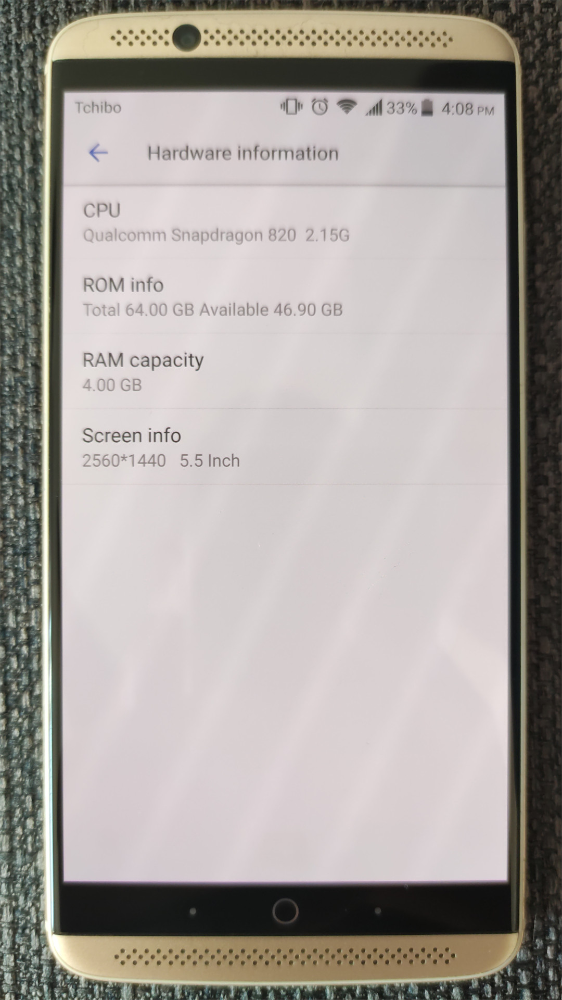

ZTE Axon 7 (zte-axon7)
Jump to navigation
Jump to search
|
 ZTE Axon 7 | |
| Manufacturer | ZTE |
|---|---|
| Name | Axon 7 |
| Codename | zte-axon7 |
| Released | 2016 |
| Category | testing |
| Original software | MiFavor 4.0 (Android 6.0.1) |
| Hardware | |
| Chipset | Qualcomm MSM8996 Snapdragon 820 |
| CPU | Quad-core (2x 2.15 GHz Kryo & 2x 1.6 GHz Kryo) |
| GPU | Adreno 530 |
| Display | 1440x2560 AMOLED |
| Storage | 64 GB |
| Memory | 4 GB |
| Architecture | aarch64 |
{kind=link}
| USB Networking | |
|---|---|
| Flashing | |
| Touchscreen | |
| Display | |
| WiFi | |
| FDE | |
| Mainline |
Partial
|
| Battery | |
| 3D Acceleration | |
| Audio | |
| Bluetooth | |
| Camera | |
| GPS | |
| Mobile data | |
| SMS | |
| Calls | |
| USB OTG | |
| NFC | |
| Accelerometer | |
|---|---|
| Magnetometer | |
| Ambient Light | |
| Proximity | |
| Hall Effect | |
| Ir TX | |
|---|---|
| TrustZone | |
|
This device is based on Snapdragon 820. See the SoC page for common tips, guides and troubleshooting steps |
Contributors
Users owning this device
- DrGit (Notes: 64GB, needs new battery (bought, not installed yet), mainline port stalled due to dual-DSI panel driver regressions)
- Humanleftswatch (Notes: one with broken Screen cable, one mostly working)
- JuniorJPDJ (Notes: running own build of Lineage-microG, my main phone)
- Segfault (Notes: Bricked)
- Ungeskriptet (Notes: A2017G, Replaced panel & unlocked bootloader)
How to enter flash mode
- Fastboot: Power on the device by pressing and holding Power and Volume Down.
- Recovery: Power on the device by pressing and holding Power and Volume Up.
Unlocking the bootloader
| Note: This has been only tested on A2017G version of the Axon 7 |
Unlocking the bootloader on this phone is quite complicated and dangerous so only proceed with caution. This will also wipe userdata so be sure to backup any important files.
Unlocking the bootloader
- Download and Install the EDL tool (follow the instrucitons on the GitHub page to install it)
- Boot into EDL mode:
adb reboot edl - Backup all partitions from the phone (without userdata):
$ ./edl --loader=Loaders/zte/009470e100040000_d1b89b1385b0db46_fhprg_peek.bin --memory=ufs rl backup --skip=userdata --genxml
- Downgrade the phone to B12 Nougat firmware:
- Download the EDL mode compatible firmware from here or here and extract it
- Flash the firmware (Only proceed if partitions were backed up!)
$ ./edl --loader=Loaders/zte/009470e100040000_d1b89b1385b0db46_fhprg_peek.bin --memory=ufs qfil A2017G_B12_NOUGAT_FULL_EDL/rawprogram*.xml A2017G_B12_NOUGAT_FULL_EDL/patch*.xml A2017G_B12_NOUGAT_FULL_EDL
- Reboot the phone by just holding Power for a few seconds
- Boot into the stock Nougat system and enable "OEM Unlocking"
- Reboot into EDL mode again:
adb reboot edl - Download and flash signed TWRP from here or here (look for recovery.bin)
$ ./edl --loader=Loaders/zte/009470e100040000_d1b89b1385b0db46_fhprg_peek.bin --memory=ufs w recovery twrp_signed-axon7.bin --lun=4
- Reboot the phone into recovery (see above)
- Download patched aboot.img and fbop/fastboot_unlock.img (aboot.img mirror and fbop/fastboot_unlock.img mirror)
- Backup current partitions and flash the patched ones
$ adb push aboot.img fastboot_unlock.img /sdcard $ adb shell dd if=/dev/block/bootdevice/by-name/fbop of=/sdcard/fbop_lock.img $ adb shell dd if=/dev/block/bootdevice/by-name/aboot of=/sdcard/aboot_lock.img $ adb pull /sdcard/fbop_lock.img /sdcard/aboot_lock.img . #save in safe place $ adb shell dd if=/sdcard/fastboot_unlock.img of=/dev/block/bootdevice/by-name/fbop $ adb shell dd if=/sdcard/aboot.img of=/dev/block/bootdevice/by-name/aboot $ adb reboot bootloader
- Unlock the bootloader (finally):
fastboot oem unlock - Reboot back into the bootloader and flash the latest official TWRP:
fastboot flash recovery twrp-3.5.2_9-0-ailsa_ii.img
Your ZTE Axon 7 should now have an unlocked bootloader with latest TWRP, for questions ask @ungeskriptet:matrix.org on Matrix.
Installation
/* Not yet */
Mainline status
| Component | Model | Status | Notes |
|---|---|---|---|
| SoC | Qualcomm MSM8996 Snapdragon 820 | Y | |
| USB | TI hd3ss3220 | P | USB Type-C 3.0 |
| UFS | Samsung KLUCG4J1CB-B0B1 | Y | 64GB variant |
| Display | Samsung s6e3ha3 | N | Using dual DSI |
| Touchscreen | Synaptics rmi4 | Y | |
| Charging | smb1351 | N | |
| Buttons | - | N | GPIO |
| Accelerometer and gyroscope | Bosh bmi160 | N | Driver available in mainline |
| Ambient light and proximity sensor | ROHM rpr0521 | N | Driver available in mainline |
| Magnetometer | AKM (Asahi Kasei Microdevices) AK09915 | N | |
| Audio | AKM (Asahi Kasei Microdevices) ak4490 | N |
ak4961 codec
|
| GPU | Qualcomm Adreno 530 | N | |
| Wi-Fi | Qualcomm qca6174 | Y | Connected through PCIe |
| Bluetooth | Qualcomm qca6174 | N | Connected through UART |
| Front camera | OmniVision ov8856 | N | |
| Main camera | Samsung s5k2t8 | N | |
RAM console (ramoops) |
- | Y | |
| Panel power supply | Renesas isl98608 | - | Datasheet |